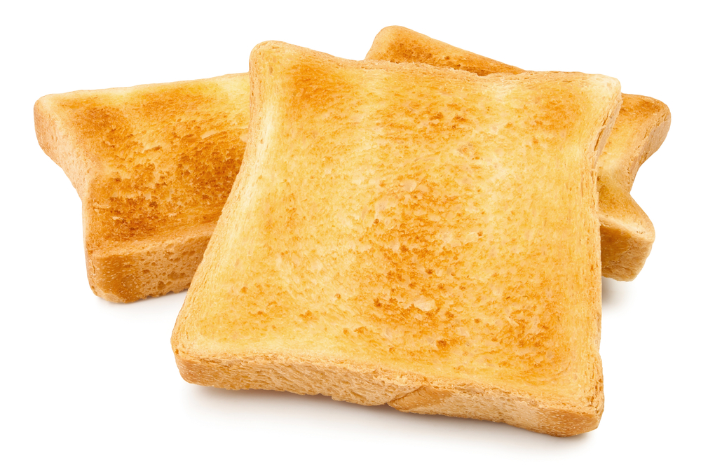

Back to main page
Toast Recipe

Description
Toast is sliced bread that has been browned by radiant heat. The browning is the result of a Maillard reaction altering the flavor of the bread and making it firmer. The firm surface is easier to spread toppings on and the warmth can help butter reach its melting point.
Information
Prep: 0 min
Cook: 1 to 4 mins
Total: 5 mins
Servings: 1
Ingredients
- 2 pieces of sliced bread
- Butter
- A spread (peanut butter, vegemite, jam)
Steps
- Put the bread into the toast
- When the bread has magically transformed into toast, remove from toaster.
- Spread butter on both slices of toast
- Spread your remaining ingredients onto your toast
Back to top